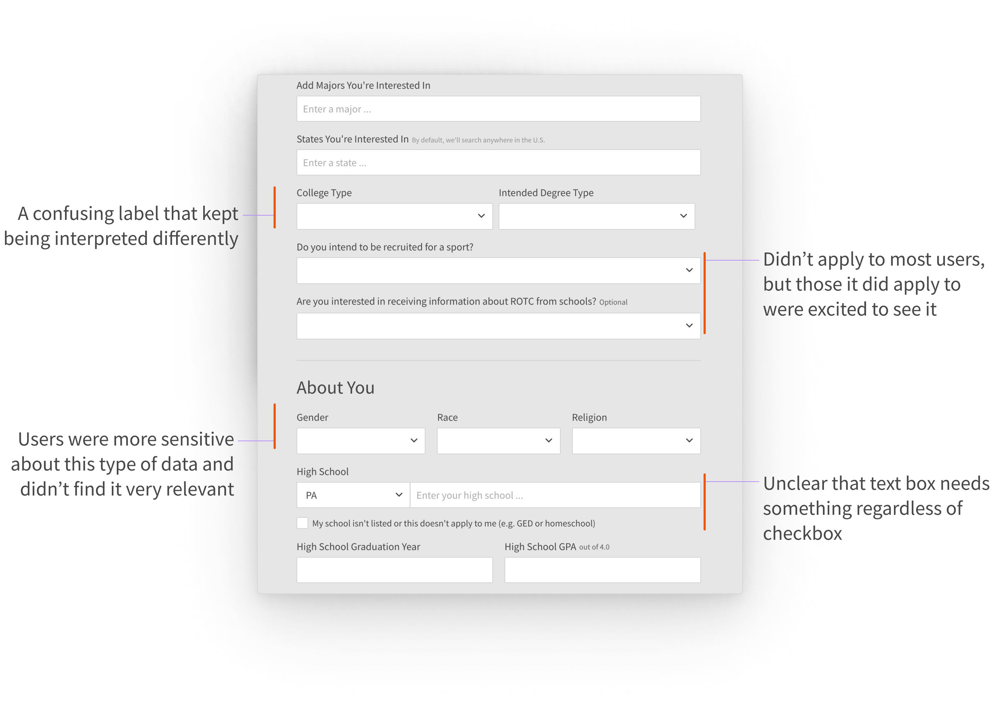

Niche helps millions of students find and enroll in the right school for them, using over 140 million reviews and ratings, powerful search and data tools, and in-depth profiles on every institution in America. When Niche first built a registration process in 2015, the company had not long ago transitioned from sending out printed(!!!) books to being a primarily digital service. I designed and led the end-to-end process for a new registration experience while managing tech debt, business requirements, and unstable product ownership.
Opportunity
Registration is a crucial step in the Niche experience.
The registration flow serves as the connection point between casual browsing to a more personalized experience tailored to assist users in finding the best schools that fit their criteria. Not only does making an account on Niche help users better foster a relationship with schools, but it’s also of huge value to our clients, schools who are interested to know the pool of students who are considering their institution.
Legacy registration was two pages—with one of the pages holding over 20 fields and scrolling on seemingly endlessly.
Page 1: The first step helps us understand what the user is on Niche for. While my team's primary focus is on college-bound students, we also service a few different verticals, namely primary and secondary education, residential areas, and workplaces.

Page 2: Adding schools to their list is a great way for students to keep track of the colleges they're interested in, and helps us let clients know which students they should reach out to directly.

Page 2 (continued): The rest of our registration flow asks about what the user is looking for in their search, as well as some basic demographic information.
Page 2 (continued): Contact information was collected as the last step.
After extensive user research and usability testing, I decided to completely re-haul the registration experience, focused on breaking down a lengthy flow into parseable and manageable bites.
With all this in mind, I put together a FigJam board that roughly mapped out how we could break down the work, outlining what was necessary for an MVP and mapping out other ideas into buckets dependent on difficulty and impact.

The final designs
I decided on a quiz-like registration that guided users through step-by-step.
Based on the user research, usability studies, and analyses we conducted, I reordered the fields to ease users through the flow instead of asking tough questions at the start. We made it easier and faster to answer questions while reducing friction points, and save the user's progress at every step so they can pick up where they left off if they leave.
Our MVP saw immediate gains, improving completed registrations by __%, reaching __% after continued optimizations.
waiting for numbers here.

and a graphic
A few specifics
Encouraging direct connection between schools and students
Something that was made possible by moving the contact information fields much earlier in the process was unlocking the ability to more easily connect users with schools. Before, contact information was collected in the last step.
While this change wasn't UI-influenced, it allowed us to use their location to intelligently pre-fill responses. Opt-in's increased from 64% to 92% which had a huge impact on our business.

Connecting the right schools with the right students
In addition to opting-in to direct communications with schools, it was important for users to save schools they were interested in to get matched with better opportunities. We extended the number of visual options from 5 to 7 to encourage more entries, which also better accommodated the average number of schools a student applies to.

This is a key part of our flow because much of our business value hinges on understanding specific college interests, and more than 50% of add to lists happen within the registration flow. By doing this, we were able to increase adds by almost 7% (3% overall).
Reducing errors and friction points
This, along with other efficiency updates we made has reduced time spent in registration by __ seconds.
Establishing brand consistency and informing the design system
Updating registration to use new branding was important in reassuring users they were in the right place.

Looking back and looking ahead
We're incredibly energized by the improvements we have made and the __% more complete registrations we have encouraged, but we're also not done. I am eager to continue learning from the data and feedback we're getting from our users to iterate and make improvements.
It's really cool to see what we have already proved and deployed (in green) in less than a year.
And although we've improved completion rates and time spent, I still look forward to a day where much of what exists in the current registration flow is actually built into the logged-in Niche user experience and we can ask our questions more organically. As we work towards a future that breaks down barriers between schools and students, like offering admission (and scholarships!) to students who haven't even applied↗, it's important that we continue empowering students and giving them the tools to help them.